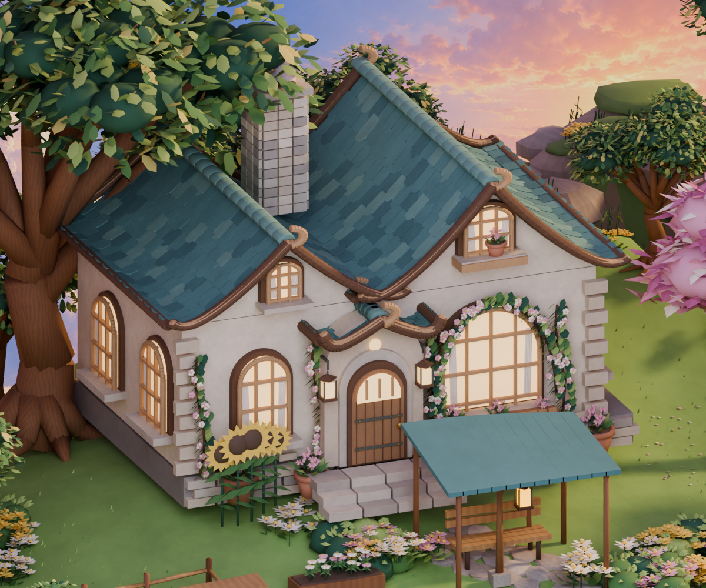
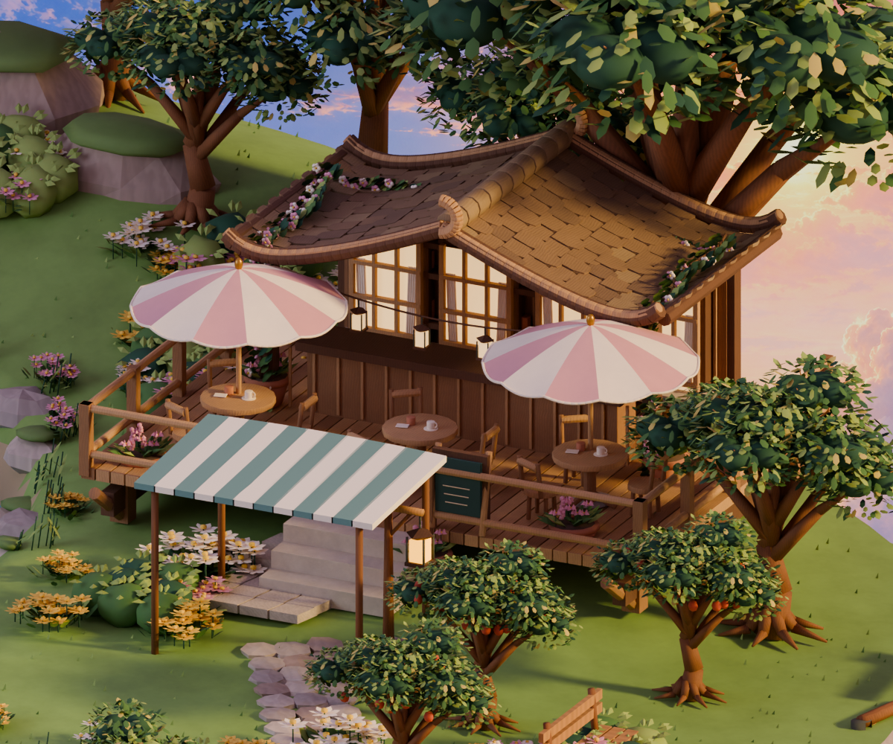
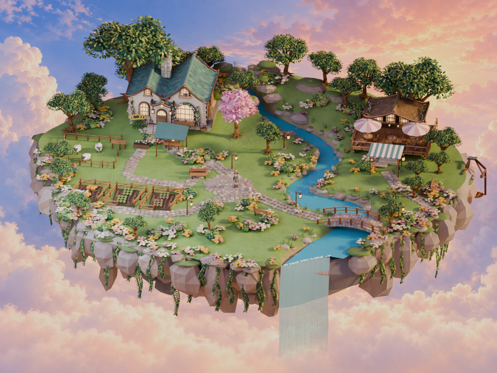

住宅和咖啡厅的这一轮近景精修：收敛瓦片色差，细化门窗与屋檐，补上攀爬花藤、布伞弧度、桌边杯碟和细木纹。延续现有的分区、坡地、弯溪与粉色花树。

多格拱窗、窗帘、细圆窗框、门扉五金与弯曲的小屋檐；保留住宅的占地和高度。

稍降低屋脊，统一木瓦色系，增加后墙格窗和屋檐花藤；遮阳伞有柔和弧度、压边和伞骨。
已完成地形、树丛和粉色花树。

在整岛中检查建筑比例与远看时的色彩关系。
仍以参考的造型、材质和氛围为方向，尚未达到逐像素一致。上述预览来自本地 Blender；动态网页使用减面模型、实时昼夜天气及远景群岛，光照会有差别。
查看上一轮地形与树木对照 · 进入动态小岛